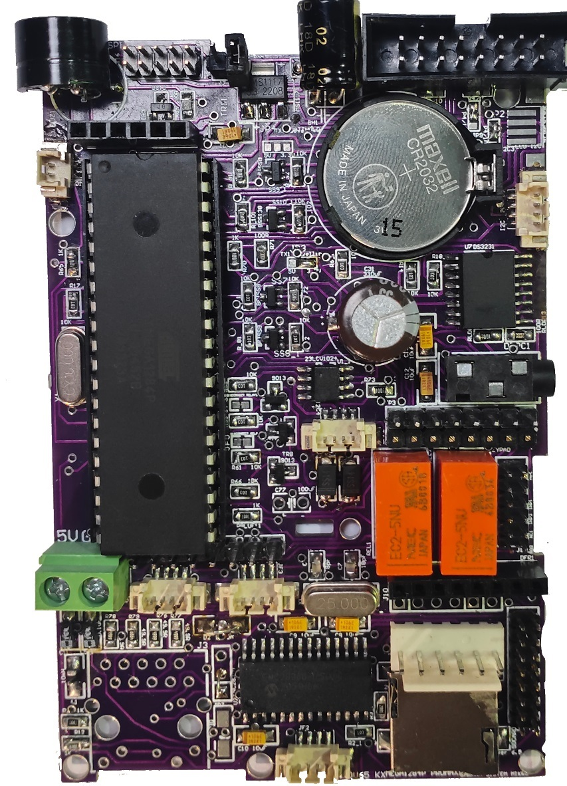

Arduino Mightycore 1284P Plug & Play

Description
The Arduino Mightycore 1284p Plug & Play Development Board is a specially designed board used to facilitate various electronic project developments. The microprocessor used, ATMega 1284p is coupled with integrated communication and connection ports. Hence, the board can satisfy a wide range of users, starting from educational entry-level users to professional and commercial users.
Target areas
The Arduino Mightycore 1284p Plug & Play Development Board is a specially designed board used to facilitate various electronic project developments. The microprocessor used, ATMega 1284p is coupled with integrated communication and connection ports. Hence, the board can satisfy a wide range of users, starting from educational entry-level users to professional and commercial users.
Feature
ATMega 1284P Processor
- Memory
- 20 MHz Clock (Maximum)
- 16 MHz Clock (Arduino Setup)
- 16 KB SRAM
- 4 KB EEPROM
- Peripherals
- 2 x 8-bit Timer/Counter (Timer/Counter 0 and 2 both with Two Compare Match Registers)
- 2 x 16-bit Timer/Counter (Timer/Counter 1 with Three Compare Match Registers, Timer/Counter 3 with Four Compare Match Registers)
- 2 x USART (providing serial communication capabilities and can be configured for both synchronous and asynchronous communication)
- 1 x Controller/Peripheral Serial Peripheral Interface (SPI)
- 1 x Controller/Peripheral I2C
- 1 x Analog Comparator with Scalable Reference Input
- Watchdog Timer
- 11 x PWM Channels
- External Interrupts
- 4 KB EEPROM
- Power
- 1.8V to 5.5V Supply Voltage
NEX PAGE